From the Cold War space race to the rise of commercial spaceflight, a parallel history unfolds—one shaped through headlines, speeches, and stories.

How attention given to different themes changed across 1950–2024